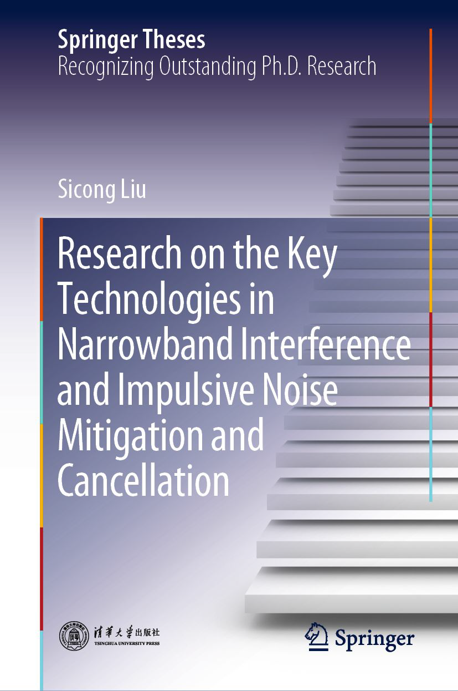
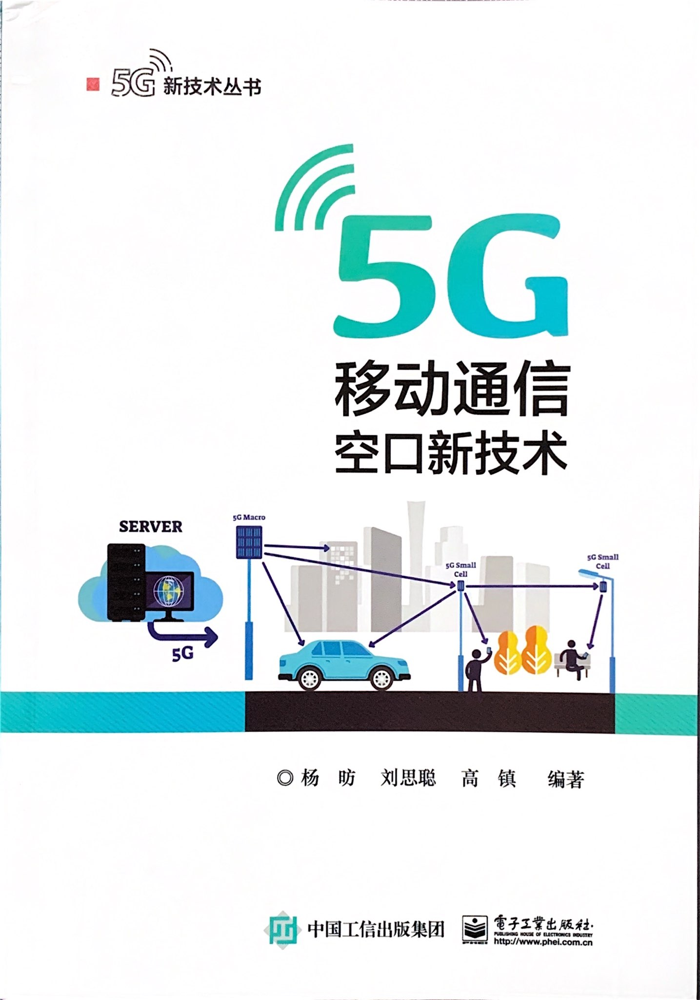
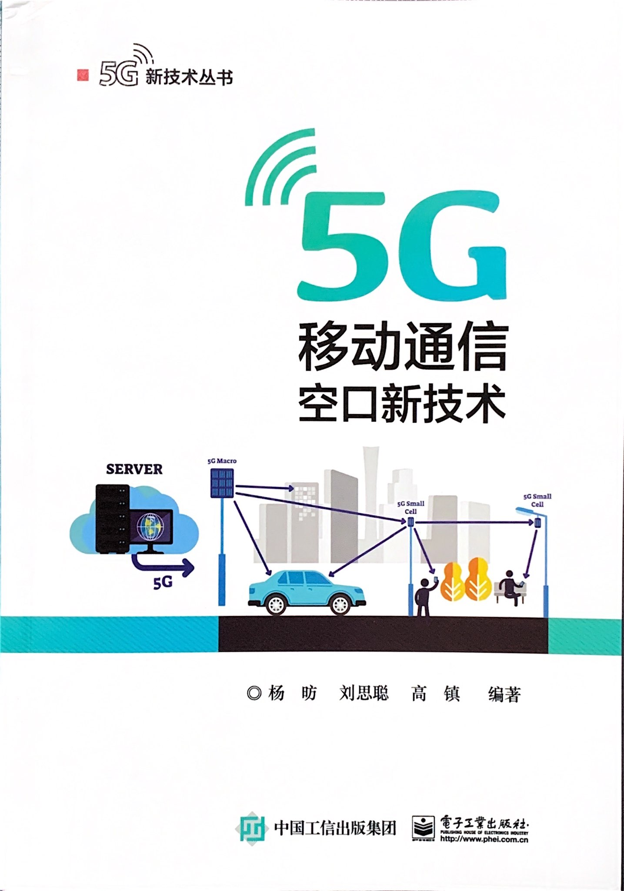

Dr. Sicong Liu 刘思聪
厦门大学信息学院 特聘副研究员、助理教授, 清华大学电子工程系 博士
Specially Appointed Associate Researcher, Assistant Professor, School of Informatics, Xiamen University
PhD, Electronic Engineering, Tsinghua University
地址：福建省厦门市思明区厦门大学海韵园，邮编：361005
Address: Haiyun Campus, Xiamen University, Xiamen 361005, China P.R.
E-mail: 1) liusc at xmu dot edu dot cn 2) liusc1028 at gmail dot com
谷歌学术个人主页 Google Scholar personal page个人简介 Biography
刘思聪 于2012年毕业于清华大学电子工程系本科获电子信息科学与技术学士学位，2017年获清华大学电子工程系信息与通信工程博士学位， 博士导师为宋健教授（IEEE会士）,并评为清华大学优秀博士毕业生。2010至2011年间赴香港城市大学电子工程学系交流访学。2017至2018年担任华为技术有限公司网络技术研究部高级工程师。 现任厦门大学信息学院特聘副研究员、助理教授、硕士生导师。
已发表50余篇期刊与会议学术论文，出版学术专著3部，获得8项发明专利授权，其中2项为国家标准必要专利。 担任宽带电力载波通信国家标准起草人。获评为福建省引进高层次人才（B类）。获中国电子学会自然科学二等奖（排名第3）、福建省科技进步三等奖（排名第3）、 清华大学优秀博士学位论文奖、清华大学电子系“学术新秀”称号。主持国家自然科学基金青年基金、福建省自然科学基金、厦门市青年创新基金等科研项目。 参与国家重点研发计划、国家科技重大专项、福建省科技重大专项等科研项目。 担任国际智能电网信息通信大会IEEE SmartGridComm 2019大会Publication Chair、IEEE ICCC 2021大会Workshop Chair、IEEE ICC 2019大会Session Chair、IEEE ICCE 2019大会Track Chair， 以及包括IEEE ICC/Globecom在内的多个国际知名学术会议技术程序委员会委员。担任Frontiers in Communications and Networks 和 Future Internet Journal等国际学术期刊编委。 中国通信学会高级会员、IEEE会员、ACM会员、中国电子学会会员。
目前的研究兴趣为无线通信中的稀疏与智能方法，主要包括稀疏信号处理、压缩感知、机器学习等核心技术，及其在无线通信、可见光通信、无线安全和物联网等领域的关键应用。
Sicong Liu received his B.S.E. in electronic engineering from Tsinghua University, Beijing, China in 2012. He received his PhD degree in electronic engineering with highest honor in Tsinghua University in 2017, supervised by Prof. Jian Song (IEEE Fellow). From 2010 to 2011, he was a visiting student in Dept. Electronic and Communications Engineering, City University of Hong Kong. He served as a Senior Engineer in the Networks Technology Research Department in Huawei Technologies, Co Ltd from 2017 to 2018. Currently, he is a Specially Appointed Associate Researcher, an Assistant Professor, and a Master Supervisor in School of Informatics, Xiamen University.
Sicong Liu has published over 50 journal and conference research papers.He has authored 3 monographs. He owns 8 Chinese invention patents, of which two are the necessary patents for the national standards. He has contributed to the drafting of the Broadband Power Line Communications Standard in China. He is recognized as the Fujian High-Level Introduced Talents (Type B). He has won Second Prize in the Natural Science Award of Chinese Institute of Electronics (ranking 3), the Third Prize in the Scientific Progress Award of Fujian Province (ranking 3), the Outstanding Doctoral Dissertation Award of Tsinghua University, and the EE Outstanding Academic Youth Award of Tsinghua University. He has been acting as the principle investigator (PI) for the National Natural Science Foundation of China Youth Fund (NSFC), Natural Science Foundation of Fujian, and Youth Innovation Fund of Xiamen. He has participated in major projects including the State Key Research Project, the National Major Project of Science and Technology, and the Major Project of Science and Technology of Fujian. He served as a the publication chair in IEEE SmartGridComm 2019, Workshop Chair of IEEE ICCC 2021, Session Chair of IEEE ICC 2019, Track Chair of IEEE ICCE 2019, and TPC member in many international academic conferences including IEEE ICC/Globecom, etc. He serves in the Editorial Board of academic journals including Future Internet Journal and Frontiers in Communications and Networks. He is a senior member of China Institute of Communications (CIC), and a member of IEEE, ACM, and China Institute of Electronics (CIE).
His current research interests lie in sparse and intelligent methods in wireless communications, mainly including key technologies of sparse signal processing, compressed sensing, and machine learning, and related typical applications in wireless communications, visible light communications, wireless security, and internet of things.
教育学术经历 Education and Academic Experiences
2020年6月 - 至今 厦门大学信息学院，特聘副研究员
2018年3月 - 2020年6月 厦门大学信息学院，助理教授
2017年7月 - 2018年1月 华为技术有限公司网络技术研究部，高级工程师
2012年8月 - 2017年7月 清华大学电子工程系，攻读信息与通信工程博士学位，导师宋健教授
2010年8月 - 2011年1月 香港城市大学电子工程学系，交流访学
2008年8月 - 2012年7月 清华大学电子工程系，本科
Jun. 2020 - Present Specially Appointed Associate Researcher, School of Informatics, Xiamen University
Mar. 2018 - Jun. 2020 Assistant Professor, School of Informatics, Xiamen University
Jul.2017-Jan. 2018 Senior Engineer, Research Dept. Network Technologies, Huawei Technologies Co. Ltd
Aug.2012-Jul.2017 Ph.D., Department of Electronic Engineering, Tsinghua University, supervised by Prof. Jian Song
Aug.2010-Jan.2011 Visiting Student, College of Science and Engineering, City University of Hong Kong, Hong Kong
Aug.2008-Jul.2012 Bachelor, Department of Electronic Engineering, Tsinghua University
荣誉奖励 Honors and Awards
• 中国电子学会自然科学二等奖（排名第3），2019
• 福建省科技进步三等奖（排名第3），2019
• 福建省引进高层次人才（B类），2019
• 清华大学优秀博士学位论文奖, 2017
• 清华大学优秀博士毕业生, 2017
• 北京市优秀毕业生, 2017
• 清华大学电子系“电子之星”奖（科创类）, 2017
• 清华大学电子系“学术新秀”奖, 2016
• 博士研究生国家奖学金, 2016
• 清华大学优秀研究生支持计划暨唐立新奖学金, 2015
• 硕士研究生国家奖学金, 2014
• 清华大学本科优良毕业生, 2012
• Second Prize in the Natural Science Award of Chinese Institute of Electronics (ranking 3rd), 2019
• Third Prize of Fujian Science and Technology Progress Award (ranking 3rd), 2019
• Fujian High-Level Introduced Talents (Type B), 2019
• Outstanding Doctoral Dissertation Award of Tsinghua University, 2017
• Outstanding PhD Graduate Award of Tsinghua University, 2017
• Outstanding Graduate Award of Beijing City, 2017
• The EE Star Award in Science and Innovation, Tsinghua University, 2017
• Outstanding Academic Youth Award, Department of EE, Tsinghua University, 2016
• National Scholarship for PhD Graduates, 2016
• The Tsinghua Excellent Graduate Students Support Project and Tang-Lixin Scholarship, 2015
• National Scholarship for Master Graduates, 2014
• Excellent Undergraduate Award in Tsinghua, 2012
科研项目 Research Grants
• 面向高可靠车联网通信的稀疏干扰消除方法研究，国家自然科学基金青年基金 （项目编号 61901403），2020年1月-2022年12月，主持
"Research on sparse interference cancellation methods for ultra-reliable vehicular communications," National Natural Science Foundation of China Youth Fund (No.61901403), 2020.01-2022.12 (PI).
• 面向新一代无线通信的多重压缩感知与稀疏学习技术研究，福建省自然科学基金（2019J05001），2019年7月-2022年6月，主持
"Study on compressed sensing and sparse learning technologies for next-generation wireless communications," Natural Science Foundation of Fujian Province of China (No.2019J05001), 2019.07-2022.06 (PI).
• 复杂5G无线环境下的稀疏干扰智能消除方法，厦门市青年创新基金（3502Z20206039），2020年7月-2023年6月，主持
"Intelligent Methods of Sparse Interference Mitigation for Complex 5G Wireless Environments", the Youth Innovation Fund of Xiamen (No.3502Z20206039), 2020.07-2023.06 (PI)
• 基于压缩感知与机器学习的5G无线通信关键技术研究，中央高校基本科研项目（20720190029），2019年1月-2019年12月，主持
"Study on key technologies of 5G wireless communications based on compressed sensing and machine learning," Fundamental Research Funds for the Central Universities of China (No.20720190029), 2019.01-2019.12 (PI).
• 基于机器学习稀疏干扰对抗车联网安全，美亚柏科产学研项目，2018年12月-2020年6月，主持
"Machine learning based sparse interference countermeasure for vehicle networks security," Joint Research Project with Meiya Pico, 2019.12-2020.06 (PI).
学术服务 Academia Services
• Publication Chair of IEEE SmartGridComm 2019
• Associate Editor of Frontiers in Communications and Networks
• Guest Editor of Future Internet Journal
• Workshop Chair of IEEE International Conference on Communications in China (ICCC) 2021
• Session/Track Chair/Co-Chair of IEEE ICC 2019, IEEE SmartGridComm 2019, IEEE ICCE 2019
• TPC member of IEEE ICC, Globecom, SmartGridComm, WCNC, VTC, IWCMC, ICCC, ICSCC, WEDGE, etc.
• Reviewer of IEEE JSAC, TCOM, TSP, TWC, TVT, TIFS, TDSC, IoTJ, TBC, COMML, WCOMML, etc.
教学工作 Teaching
• CST304: Digital Signal Processing, Undergraduates, Fall 2018/2019, Xiamen University Malaysia (English)
• CST103: Programming Language (C), Undergraduates, Fall 2018/2019, Xiamen University Malaysia (English)
• 高频电子线路(II), 本科生, 2018/2019学年春季学期、2019/2020学年春季学期，厦门大学
• 无线通信原理, 本科生, 2019/2020学年春季学期, 厦门大学
• 数字信号处理实验, 本科生, 2019/2020学年秋季学期、2020/2021学年秋季学期，厦门大学
发表论著 Selected Publications
出版专著 Book Chapters
• Sicong Liu, "Research on the Key Technologies in Narrowband Interference and Impulsive Noise Mitigation and Cancellation," Springer, Sep. 2020, ISBN: 978-981-15-4723-2.
• 刘思聪，杨昉，宋健，“非高斯特殊噪声干扰的抑制与消除：从经典信号处理到压缩感知方法”，北京：电子工业出版社，2019年5月
S. Liu, F. Yang, J. Song, "Non-Gaussian Noise and Interference Mitigation and Cancellation:From Classical Signal Processing to Compressed Sensing Methods," Beijing: Publishing House of Electronics Industry, May 2019, ISBN: 978-7-121-36455-6.
• 杨昉，刘思聪，高镇，“5G移动通信空口新技术”，北京：电子工业出版社，2020年7月
F. Yang, S. Liu, Z. Gao, "New Air Interface Technologies for 5G Mobile Communications," Beijing: Publishing House of Electronics Industry, July 2020, ISBN: 978-7-121-39193-4.
  

期刊论文 Journals
• L. Xiao, H. Zhang, Y. Xiao, X. Wan, S. Liu, L.-C. Wang, and H. V. Poor, "Reinforcement Learning-Based Downlink Interference Control for Ultra-Dense Small Cells," IEEE Transactions on Wireless Communications, vol. 19, no. 1, pp. 423-434, Jan. 2020.[Abstract][PDF][bibtex]
• S. Liu*, L. Xiao, Z. Han and Y. Tang, "Eliminating NB-IoT Interference to LTE System: a Sparse Machine Learning Based Approach," IEEE Internet of Things Journal, vol. 6, no. 4, pp. 6919-6932, Aug. 2019.[Abstract][PDF][bibtex]
• L. Xiao, G. Sheng, S. Liu*, H. Dai, M. Peng and J. Song, "Deep Reinforcement Learning Enabled Secure Visible Light Communication against Eavesdropping," IEEE Transactions on Communications, vol. 67, no. 10, pp. 6994-7005, Oct. 2019.[Abstract][PDF][bibtex]
• S. Liu*, L. Xiao, L. Huang and X. Wang, "Impulsive Noise Recovery and Elimination: A Sparse Machine Learning Based Approach," IEEE Transactions on Vehicular Technology, vol. 68, no. 3, pp. 2306-2315, March 2019.[Abstract][PDF][bibtex]
• Sicong Liu, Fang Yang*, Jian Song, Zhu Han, "Block Sparse Bayesian Learning Based NB-IoT Interference Elimination in LTE-Advanced Systems," IEEE Transactions on Communications, 2017, 65(10): 4559 - 4571.
• Sicong Liu, Fang Yang*, Xianbin Wang, Jian Song, Zhu Han, "Structured-Compressed-Sensing-Based Impulsive Noise Cancellation for MIMO Systems," IEEE Transactions on Vehicular Technology, 2017, 66(8): 6921 - 6931.
• Sicong Liu, Fang Yang*, Wenbo Ding, Xianbin Wang, and Jian Song, "Two Dimensional Structured Compressed Sensing Based NBI Cancellation Exploiting Spatial and Temporal Correlations in MIMO Systems," IEEE Transactions on Vehicular Technology, vol. 65, no. 11, pp. 9020-9028, Nov. 2016.
• Sicong Liu, Fang Yang*, Wenbo Ding, and Jian Song, "Double Kill: Compressive Sensing Based Narrowband Interference and Impulsive Noise Mitigation for Vehicular Communications," IEEE Transactions on Vehicular Technology, vol. 65, no. 7, pp. 5099-5109, July 2016.
• Sicong Liu*, Fang Yang, Jian Song, "Narrowband Interference Cancellation Based on Priori Aided Compressive Sensing for DTMB Systems,” IEEE Transactions on Broadcasting, vol.61, no.1, pp.66-74, March 2015.
• Sicong Liu, Fang Yang, Jian Song, "An Optimal Interleaving Scheme with Maximum Time-Frequency Diversity for PLC Systems,” IEEE Transactions on Power Delivery, vol. 31, no. 3, pp. 1007-1014, June 2016.
• Sicong Liu, Fang Yang, Wenbo Ding, Jian Song, and Andrea M. Tonello, "Structured Compressed Sensing Based Narrowband Interference Elimination for In-Home Power Line Communications," IEEE Transactions on Consumer Electronics, vol. 63, no. 1, pp. 10-18, Feb. 2017.
• Sicong Liu, Fang Yang, Chao Zhang, Jian Song, "Narrowband interference mitigation based on compressive sensing for OFDM systems”, IEICE Transactions on Fundamentals, vol. E98-A, no. 3, pp. 870–873, March 2015.
• Tengjiao Wang, Sicong Liu, Fang Yang, Jintao Wang, Jian Song, “Generalized Spatial Modulation Based Multi-User and Signal Detection Scheme for Terrestrial Return Channel with NOMA”, accepted by IEEE Transactions on Broadcasting, Aug. 2017.
• Xu Ma, Fang Yang, Sicong Liu, Jian Song and Zhu Han, “Design and Optimizationon Training Sequence for mmWave Communications: A New Approach for Sparse Channel Estimation in Massive MIMO", in IEEE Journal on Selected Areas in Communications, vol. 35, no. 7, pp. 1486-1497, Apr. 2017.
• Xu Ma, Fang Yang, Sicong Liu, Jian Song, "Channel Estimation for Wideband Underwater Visible Light Communication: A Compressive Sensing Perspective", accepted by Optics Express, Dec. 2017.
• Wenbo Ding, Fang Yang, Sicong Liu, Xianbin Wang, and Jian Song, "Non-Orthogonal Time-Frequency Training Sequence Based CSI Acquisition for MIMO Systems," IEEE Transactions on Vehicular Technologies, vol. 65, no. 7, pp. 5714-5719, July 2016.
• Wenbo Ding, Fang Yang, Sicong Liu, and Jian Song, "Approach to suppress out-of-band emission for dual pseudo noise padded time-domain synchronous-orthogonal frequency division multiplexing systems," IET Communications, vol. 9, no. 13, pp. 1606-1614, Sep. 2015.
• Fang Yang, Junnan Gao and Sicong Liu, "Novel Visible Light Communication Approach Based on Hybrid OOK and ACO-OFDM," IEEE Photonics Technology Letters, vol. 28, no. 14, pp. 1585-1588, July15, 15 2016.
• Fang Yang, Junnan Gao, and Sicong Liu, "Priori Aided Compressed Sensing-Based Clipping Noise Cancellation for ACO-OFDM Systems," IEEE Photonics Technology Letters, vol. 28, no. 19, pp. 2082-2085, Oct.1, 1 2016.
• Fang Yang, Junnan Gao, Sicong Liu, and Jian Song, "Clipping Noise Elimination for OFDM Systems by Compressed Sensing With Partially Aware Support," accepted by IEEE Transactions on Broadcasting, Jun. 2016.
• Xu Ma, Fang Yang, Sicong Liu, Wenbo Ding, Jian Song, "Structured Compressive Sensing Based Channel Estimation for Time Frequency Training OFDM Systems over Doubly Selective Channel", accepted by IEEE Wireless Communications Letters, Feb. 2017.
• Wenbo Ding, Fang Yang, Sicong Liu, and Jian Song, "Structured compressive sensing-based non-orthogonal time-domain training channel state information acquisition for multiple input multiple output systems," IET Communications, vol. 10, no. 6, pp. 685-690, Apr. 2016.
• Wenbo Ding, Yang Lu, Fang Yang, Wei Dai, Pan Li, Sicong Liu, and Jian Song, "Spectrally Efficient CSI Acquisition for Power Line Communications: A Bayesian Compressive Sensing Perspective," in IEEE Journal on Selected Areas in Communications, vol. 34, no. 7, pp. 2022-2032, July 2016.
会议论文 Conferences
• X. Huang, S. Liu*, "Massive MIMO Channel Estimation for Vehicular Communications: A Deep Learning Based Approach,” 2020 IEEE International Conference on Communications (ICC) Workshops, Dublin, Ireland, June 2020.
• W. Wang, X. Lu, S. Liu*, L. Xiao, B. Yang, "Energy Efficient Relay in UAV Networks Against Jamming: A Reinforcement Learning Based Approach,” 2020 IEEE 91st Vehicular Technology Conference (VTC2020-Spring), Antwerp, Belgium, May 2020.
• Y. Ding, D. Jiang, J. Huang, L. Xiao, S. Liu*, Y. Tang, H. Dai, "QoE-Aware Power Control for UAV-Aided Media Transmission with Reinforcement Learning,” 2019 IEEE Global Communications Conference (GLOBECOM), Waikoloa, HI, USA, 2019, pp. 1-6.
• H. Zhang, M. Min, L. Xiao, S. Liu*, P. Cheng and M. Peng, "Reinforcement Learning-Based Interference Control for Ultra-Dense Small Cells,” 2018 IEEE Global Communications Conference (GLOBECOM), Abu Dhabi, United Arab Emirates, 2018, pp. 1-6.
• Z. Xiao, B. Gao, S. Liu* and L. Xiao, "Learning Based Power Control for mmWave Massive MIMO against Jamming,” 2018 IEEE Global Communications Conference (GLOBECOM), Abu Dhabi, United Arab Emirates, 2018, pp. 1-6.
• Sicong Liu, Fang Yang, Wenbo Ding, Jian Song, Zhu Han, "Impulsive Noise Cancellation for MIMO-OFDM PLC Systems: a Structured Compressed Sensing Perspective", to appear in Proc. IEEE Global Communications Conference (Globecom), Dec. 2016.
• Sicong Liu, Fang Yang, Wenbo Ding, Jian Song, "NBI Cancellation for Smart Grid Communications: A Block Sparse Bayesian Learning Perspective", in Proc. 2016 IEEE International Conference on Communications (ICC), Kuala Lumpur, May 2016, pp. 1-6.
• Sicong Liu, Fang Yang, Wenbo Ding, Jian Song, "Structured compressive sensing based narrowband interference mitigation for vehicular communications,” Proc. IEEE International Conference on Communications (ICC’15), pp. 2375-2380, Jun. 2015.
• Sicong Liu, Fang Yang, Wenbo Ding, and Jian Song, "A Priori Aided Compressive Sensing Approach for Impulsive Noise Reconstruction," in Proc. IEEE IWCMC 2015, Dubrovnik, Croatia.
• Sicong Liu, Fang Yang, Wenbo Ding, and Jian Song, “Structured Compressed Sensing Based NBI Recovery from Spatial Multiple Differential Measurements for MIMO PLC Systems,” in Proc. IEEE Globecom 2015, San Diego, USA.
• Sicong Liu, Fang Yang, Jian Song, Jianqi Li, Weilin Liu, "An optimized time-frequency interleaving scheme for OFDM-based power line communication systems”, in Proc. IEEE International Conference on Communications (ICC), Sydney, Jun. 2014, pp. 4137-4142.
• Sicong Liu, Fang Yang, Chao Zhang, Jian Song, "Compressive Sensing Based Narrowband Interference Cancellation for Power Line Communication Systems”, to be published in Proc. IEEE Global Communications Conference (Globecom), Austin, USA, Dec. 2014.
• Sicong Liu, Fang Yang, Jian Song, Fei Ren, Jia Li, "OFDM preamble design for synchronization under narrowband interference”, in Proc. IEEE International Symposium on Power Line Communications (ISPLC), Johannesburg, South Africa, Mar. 2013, pp. 252-257.
• Jian Song, Sicong Liu, Guangxin Zhou, Bingyan Yu, Wenbo Ding, Fang Yang, Hongming Zhang, Xun Zhang, Amara Amara, "A cost-effective approach for ubiquitous broadband access based on hybrid PLC-VLC system", in Proc. 2016 IEEE International Symposium on Circuits and Systems (ISCAS), Montreal, QC, May 2016, pp. 2815-2818.
• Tengjiao Wang, Sicong Liu, Fang Yang, Jintao Wang, Jian Song, Zhu Han, “Block-SparseCompressiveSensingBased Multi-User and Signal Detection for Generalized Spatial Modulation in NOMA”, accepted by Proc. Wireless Communications and Mobile Computing 2017 (IWCMC’17), Valencia, Spain, 2017.
• Wenbo Ding, Fang Yang, Sicong Liu, and Jian Song, “Spectrally Efficient CSI Acquisition Approach For Large-Scale MIMO Systems,” in Proc. IEEE Globecom 2015, San Diego, USA.
• Junnan Gao, Fang Yang, Sicong Liu, "Hybrid Multi- and Single-Carrier Modulation Approach for Visible Light Communication", in Proc. IEEE International Conference on Communications (ICC'17), May 2017.
• Fang Yang, Junnan Gao, Sicong Liu, "Clipping Noise Cancellation for OFDM systems Based on Priori Aided Compressed Sensing", in Proc. IEEE International Symposium on Broadband Multimedia Systems and Broadcasting (BMSB), Nara, 2016, pp. 1-4.
• Xu Ma, Fang Yang, Sicong Liu, Jian Song, Zhu Han, "Training Sequence Design and Optimization for Structured Compressive Sensing Based Channel Estimation in Massive MIMO Systems", in Proc. IEEE Global Communications Conference (Globecom), Dec. 2016.
• Fang Yang, Junnan Gao, Sicong Liu, and Jian Song, "Clipping noise cancellation based on compressed sensing for visible light communication", in Proc. 3rd Workshop on Visible Light Communication Systems (VLCS'16), New York, USA, 2016, pp. 1-6.
学术报告 Invited Speeches and Talks
• 在IEEE国际电路与系统大会 IEEE International Symposium on Circuits and Systems (ISCAS) 2016 做特邀学术报告
Invited paper, IEEE International Symposium on Circuits and Systems (ISCAS) 2016
• 在IEEE无线光通信国际学术会议 IEEE Symposium and Workshop on Visible Light Communications 2016 做特邀学术报告
Invited speech, IEEE Symposium and Workshop on Visible Light Communications 2016
• 在戴尔（中国）股份有限公司做关于“5G通信关键技术及其在工业物联网中的应用”特邀主题学术报告, 2019
Invited speech, "Key technology of 5G communications and its applications in industry IoT", Dell, Inc., 2019
发明专利 Innovation Patents
• 刘思聪，黄潇；一种基于深度卷积神经网络的大规模多天线信道估计方法；中国发明专利，202010413758.3；已公开。
• 杨昉，高俊男，刘思聪，宋健，陆建华；冲激噪声消除方法及装置；中国发明专利，201510201105.8；已授权。
•杨昉，刘思聪，张超，宋健，王劲涛; 一种基于压缩感知的冲激噪声估计与消除方法及装置；发明专利，201410140839.5；已授权。
•杨昉，刘思聪，宋健，潘长勇; 一种基于压缩感知的窄带干扰估计和消除方法及装置；发明专利，201410006974.0；已授权。
• 杨昉，刘思聪，宋健，阳辉，牛志升；用于正交频分复用通信的交织方法及装置；中国发明专利，201310153729.8；已授权。
•杨昉，刘思聪，宋健，潘长勇; 基于先验信息辅助的压缩感知窄带干扰估计方法及装置;发明专利，201310395712.3；已授权。
•杨昉，刘思聪，潘长勇，宋健; 数字通信系统中的帧同步序列生成方法及装置；发明专利，201310037606.8；已授权。
•杨昉，刘思聪，宋健，彭克武; 电力线通信系统中基于 OFDM 的多频组网方法及装置；发明专利，201310395712.3；已授权。
• 潘长勇，任飞，刘思聪，李嘉，杨昉，张超，宋健；基于非对等保护的混合自动请求重传方法；中国发明专利，201210238146.0；已授权。